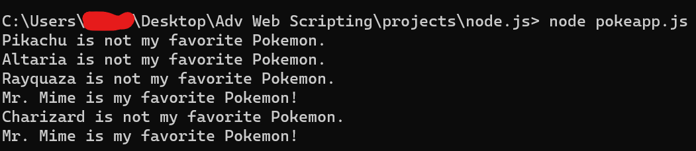

Pokemon
// JavaScript Document
"use strict"
const pokemonArray = ["Pikachu", "Altaria", "Rayquaza", "Mr. Mime", "Charizard"];
module.exports = pokemonArray;
Favorite
// JavaScript Document
"use strict"
const pokemonArray = ["Pikachu", "Altaria", "Rayquaza", "Mr. Mime", "Charizard"];
const randomIndex = Math.floor(Math.random() * pokemonArray.length); //chooses a random names in the array
module.exports = randomIndex;
Pokeapp
// JavaScript Document
"use strict"
const favoriteIndex = require('./favorite.js');
const pokemonArray = require('./pokemon.js');
const favorite = pokemonArray[favoriteIndex]; // selects a random number within the array and sets the value to what is in that spot
function logFavoriteStatus(pokemon) {
if (pokemon === favorite) { // if the pokemon is the favorite...
console.log(`${pokemon} is my favorite Pokemon!`);
} else { // if the pokemon isn't the favorite...
console.log(`${pokemon} is not my favorite Pokemon.`);
}
}
// Using if/else statement
for (let i = 0; i < pokemonArray.length; i++) { // uses the array to set the pokemon variable
const pokemon = pokemonArray[i];
logFavoriteStatus(pokemon);
}
// Using switch statement with fall-through
switch (favorite) { //switches between each pokemon, tells if it is the favorite or not.
case "Pikachu":
logFavoriteStatus(favorite); // calls the logFavoriteStatus function, which will tell which one is the favorite a second time.
break
case "Altaria":
logFavoriteStatus(favorite);
break
case "Rayquaza":
logFavoriteStatus(favorite);
break
case "Mr. Mime":
logFavoriteStatus(favorite);
break
case "Charizard":
logFavoriteStatus(favorite);
break; // exits switch
default:
console.log("No favorite Pokemon selected.");
}
This project does 2 different things. First it uses the Pokemon array and randoming chooses from the array which one is the favorite Pokemon. I have it go through an if/else statement that displays if the Pokemon is the favorite or not. I used the if/else to also make my switch statement. The main difference between the 2 is that if/else displays every single one, while in the switch statment, I have it break as soon as it finds the favorite pokemon(which is why it is displayed twice in the picture below.) If the Pokemon is not the favorite, it simply just skips it and goes to the next part of the list.
